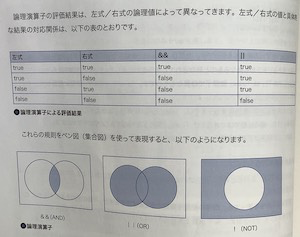

複数の条件式（または論理値）を合理的に結合し、
その結果をtrue/falseとして返します。
通常、前項の比較演算子と組み合わせて利用することで、
より複雑な条件式を表現することができます。
演算子
&&・・・左右の色が共にtrueの場合はtrue
||・・・左右の色がどちらかがtrueの場合はtrue
!・・・式がfalseの場合はtrue
論理演算子の評価結果は、左式／右式の値と具体的な
結果の対応表を覗いてください。

なおJavaScriptは
・空文字列（''）
・数値の0、NaN（Not a Number）
・null、undefined
上記以外の値が全てtrueとみなされます。
論理積／論理和演算子を利用する場合、 「左式だけが評価されて右式が評価されないケース」 も注意しておかなければなりません。
ショートカット演算子はこういったところで使ってみましょう。
ビット演算子は整数値を2進数で表した場合の各桁に対して （ビット単位に）、論理計算を行う演算のことをいいます。 ビット演算子は、さらに『ビット論理演算子』 と『ビットシフト演算子』の2つに大別できます。
カテゴリに分類できない演算子です。
削除に成功した場合true 失敗した場合falseを返す
typeof演算子はオペランドに指定した、 変数／リテラルのデータ型を表す文字列を返します。 早速具体的な例をみてみましょう
優先順位 JavaScriptは演算子に優先順位を持っています。 配列 > シフト > 比較 > 条件 > カンマの順に優先順位を持っています。